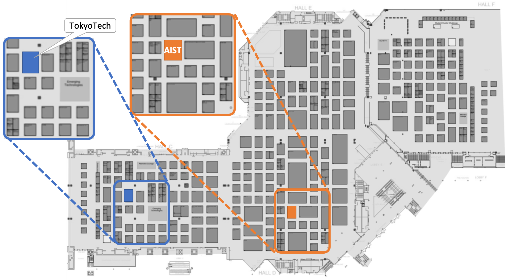

AIST started operation of ABCI, which is a publicly available cloud infrastructure for AI research and development, from this July and RWBC-OIL will start AI research using ABCI. RWBC-OIL researchers from AIST and TokyoTech attend SC18 to provide presentation and booth exhibition about ABCI, AI/BigData research and related research projects.
SC18 Booth Exhibition
RWBC-OIL mission is to advance the high-end processing and applications of big data in the real world, utilizing high-performance computing as well as AI-based analysis technologies on world-leading computing infrastructures. By collaborating with top-tier global research institutions as well as industries, this effort focuses on areas such as video recognition, drug design, and social simulations.
Highlights at SC18 is two supercomputing infrastructures: AI Bridging Cloud Infrastructure (ABCI) and TSUBAME3.0. ABCI is an open innovation platform with world-class computing resources of 550 Pflops (HP) / 37 Pflops (DP) for AI research and development. TSUBAME3.0 is a supercomputer operated by TokyoTech which got No.1 in the Green500 in June 2017. The design of TSUBAME3.0 had a great impact on the design of ABCI. Further information about ABCI is available from ABCI web site. Information about TSUBAME3.0 is available from TokyoTech web site.
We provide detail information about ABCI at AIST booth. There is a mock-up of ABCI compute node. You can get information about TSUBAME3.0 at TokyoTech booth and there is also a mock-up of TSUBAME3.0 compute node. You can reach the exhibition information abount TokyoTech on this page.
Booth Map
AIST booth is at #2409
TokyoTech booth is at #427

Presentations
Invited Talk
ABCI – Envisioning High Performance Human-Centered AI for Industry
Satoshi Sekiguchi
Date: Wednesday, Nov. 14th, 3:30pm - 4:15pm
Location: Exhibit Hall B
Research Poster
FlowOS-RM: Disaggregated Resource Management System
Ryousei Takano, Kuniyasu Suzaki, Hidetaka Koie
Date: Tuesday, Nov. 13th, 8:30am - 5pm
Location: C2/3/4 Ballroom
BoF Presentation
The Green 500: Trends in Energy Efficient Supercomputing
Hirotaka Ogawa
Date: Thursday, Nov. 15th 5:15pm - 6:45pm
Location: D167
Data Analytics for System and Facility Energy Management
Ryousei Takano
Date: Thursday, Nov. 15th 12:15pm - 1:15pm
Location: D171
Rankings
- ABCI ranked ??? in Top500 list.
- ABCI ranked ??? in Green500 list.